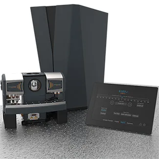
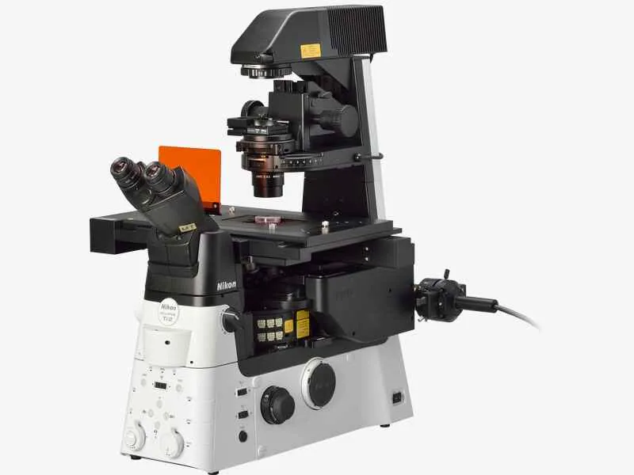
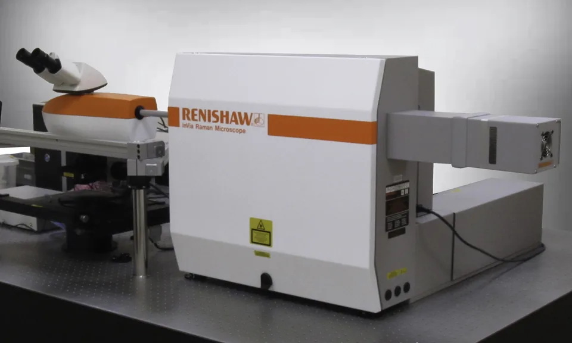
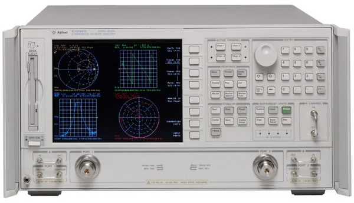
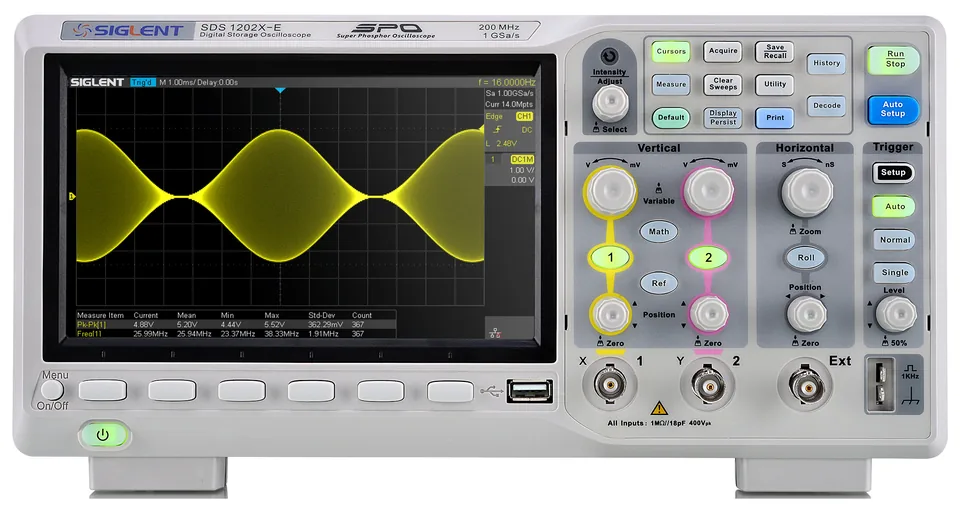
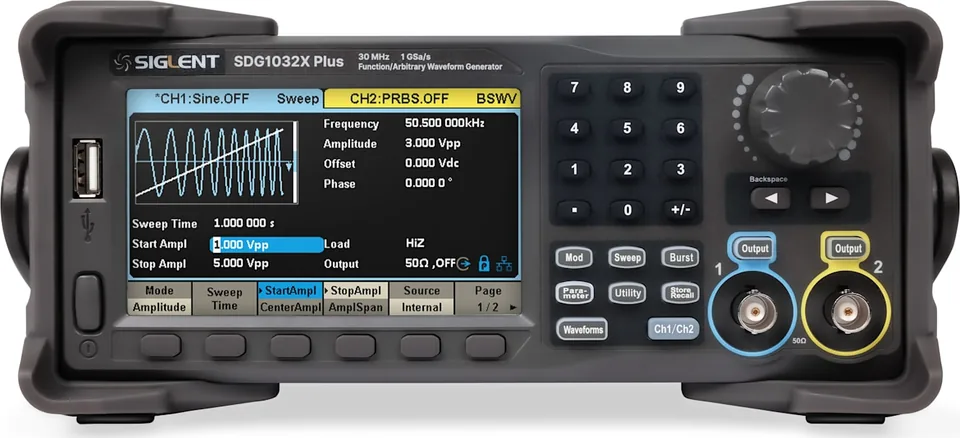
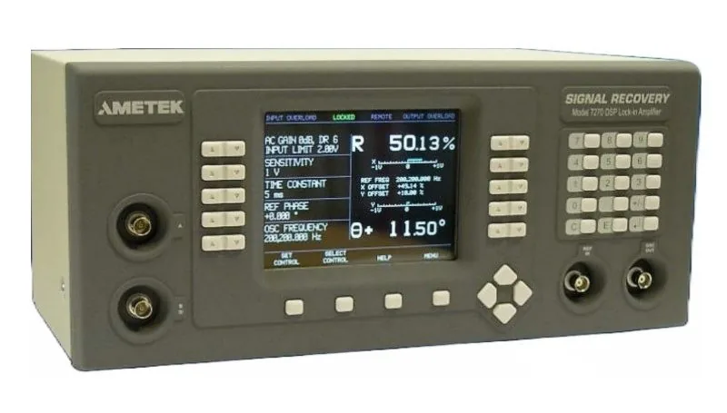
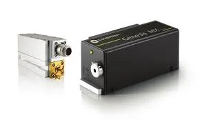
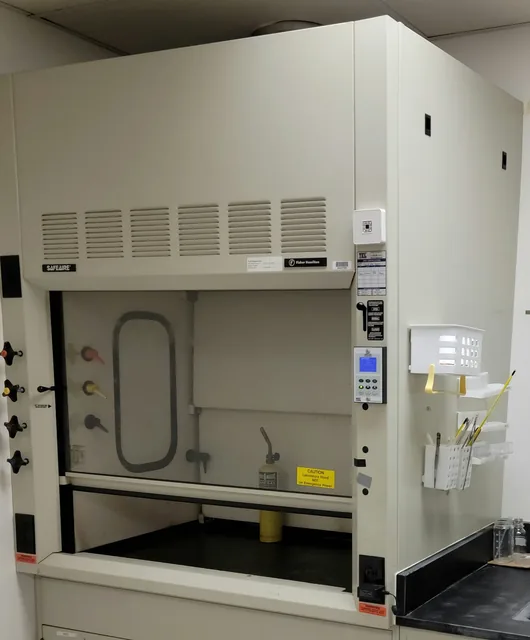

Optics and photonics
Lasers and broadband sources from the ultraviolet to the mid-infrared, fiber and polarization optics, detectors, spectrometers, and Raman and optical microscopy.
Optical, microwave, and cryogenic measurements at FIU, combined with simulation and experiments at partner laboratories.
Lasers and broadband sources from the ultraviolet to the mid-infrared, fiber and polarization optics, detectors, spectrometers, and Raman and optical microscopy.
S-parameter measurements from 50 MHz to 20 GHz, oscilloscopes, waveform generators, and lock-in detection for resonators, antennas, and metamaterials.
A Montana Instruments CryoAdvance cryostat with a magneto-optic module for low-temperature optical and sensing experiments.
Frequency- and time-domain full-wave solvers, reduced models, and GPU and HPC parameter sweeps.
Qiskit, QuTiP, Python, and Jupyter for teaching and modeling, IonQ cloud access, and 32,000 NVIDIA A100 GPU-hours in January–June 2026. FIU’s own IonQ quantum computer is expected in late 2027.
FIU shared facilities and external partners support fabrication, characterization, and computing. Work with RadiaBeam, the University of Chicago, Argonne, Simon Fraser University, and LAPLACE in Toulouse connects our models with superconducting-resonator and plasma experiments.

Cryogenic platform with magneto-optic module for low-temperature optical and sensing experiments.

Inverted research microscope for optical inspection and imaging.

Raman spectroscopy and microscopy for materials, nanophotonics, and sensing studies.

S-parameter measurements from 50 MHz to 20 GHz for RF, microwave, and resonator characterization.

200 MHz two-channel digital oscilloscope.

Arbitrary waveforms for pulse, modulation, and control experiments.

Digital lock-in amplifier for measuring weak signals.

Water-cooled single-frequency 532 nm laser.

Fume hood for sample preparation.
Irises, fiber patch cables (320–2200 nm), fiber collimators (532 to 980 nm), variable beamsplitters, Rochon prisms, achromatic lens kits, Glan-Thompson and Glan-Taylor polarizers, and apochromatic microscope objectives.
Broadband sources covering 240–3800 nm, a 520 nm nanosecond pulsed laser diode, HeNe lasers, a Genesis MX532 single-frequency laser, and laser-safety equipment.
Photodiode power sensors, an integrating sphere, a power and energy console, avalanche photodetectors, a scanning-slit beam profiler, and a fiber spectrometer (200–1100 nm).
Montana Instruments CryoAdvance with magneto-optic module, Nikon Eclipse Ti2-E microscope, Renishaw inVia Raman microscope, two Newport Integrity 2 VCS optical tables, and enclosures.
8720ES network analyzer (50 MHz–20 GHz), Siglent SDS1202X-E oscilloscope, SDG1032X and UTG932E generators, Keithley 2182A nanovoltmeter, Signal Recovery 7270 lock-in amplifier, filters, and mounts.
Michelson interferometer, quantum-cryptography analogy, and quantum-eraser demonstration kits.